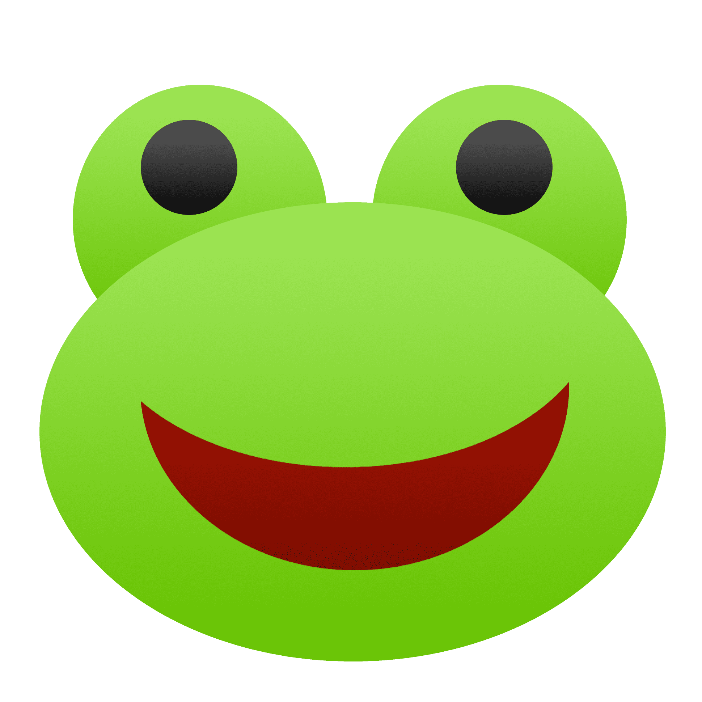

Oi, Meu xuxuzão.
17 meses de Nana e Kappo
"I was the one you always dreamed of You were the one I tried to draw"
"Essa música não é necessariamente romântica, mas eu acho ela intensa. E eu amo a nossa intensidade, a intensidade com que a gente se ama, e quer o bem um do outro"
BURNING! É como eu me sinto toda vez que to contigo. Toda vez que acordo e lembro que compartilho a vida com uma pessoa maravilhosa. O fogo aquece, traz vida, se não passar protetor solar até queima. Eu amo o teu fogo, o nosso fogo
"Amor, se eu fosse um peixe betta tu me amaria?"
Espero que a resposta seja sempre SIM!.
Tu é tudo pra mim. Eu amo te ter nos meus planos, amo crescer junto contigo. Amo o nosso romance. TE AMO!
Te amo de montão